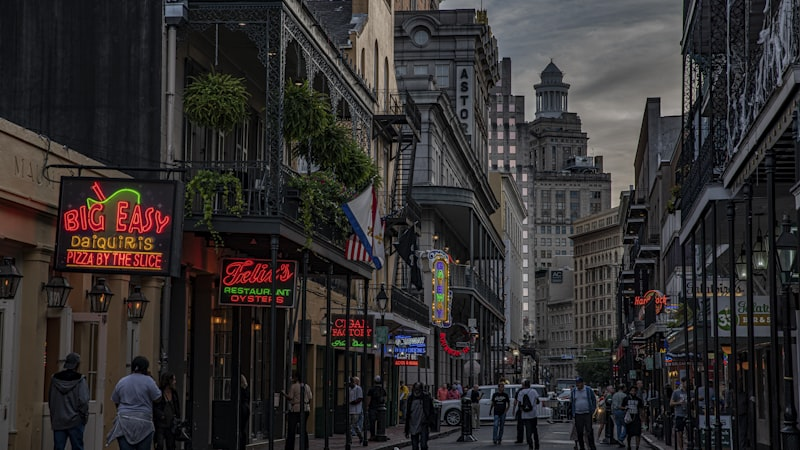
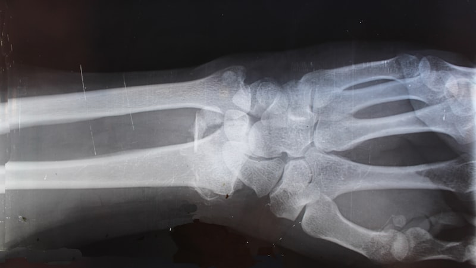
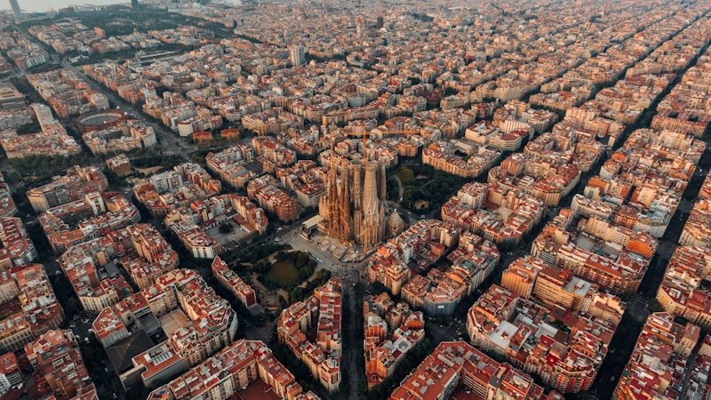
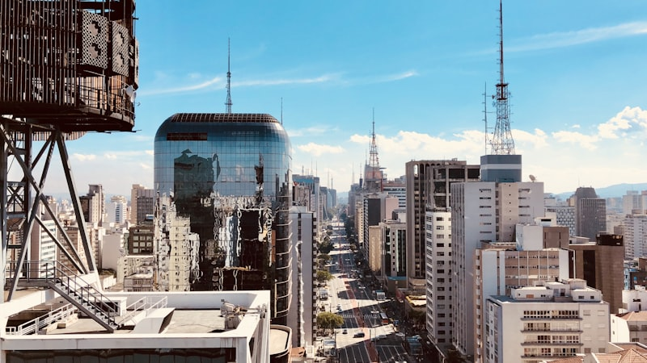

Honors, invited talks, and presentations at leading venues in computational neuroscience and machine learning.
Champalimaud Research Symposium, Lisbon, Portugal
Wu Tsai Institute, Yale University
International Conference on Machine Learning
QCB PhD Retreat, Baylor College of Medicine
Universidad Peruana Cayetano Heredia
Neuro-cybernetics At Scale
Spatiotemporal Modeling of Cortical Cholinergic and Calcium Signaling Dynamics Across Learning
Foundation Models in Neuroscience Workshop
BrainLM: A foundation model for brain activity recordings

Shared Visual Representation between Humans and Machines Workshop
Local Convolutions Cause an Implicit Bias towards High Frequency Adversarial Examples
Local Convolutions Cause an Implicit Bias towards High-Frequency Adversarial Examples
A Simple Visual Task Demonstrating the Benefit of Lateral or Feedback Connections
Spatiotemporal modeling of cortical cholinergic and calcium signaling dynamics across learning

A Simple Visual Task Demonstrating the Benefit of Lateral or Feedback Connections

Recurrent computations for pattern completion

LASCON — University of Sao Paulo
Synchronization differences in a network memory model of CA3 with progressive neuronal removal